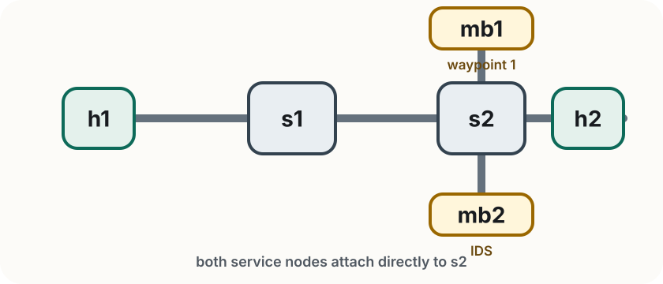

Lab 3
Rogers Executive Workshop 3 — Transport Network
The topology and what we are trying to show
In this lab you will:
Goal Understand how SRv6 steers traffic through an explicit sequence of nodes — without a controller touching the switches.

| Node | Role | IPv4 | SRv6 SID |
|---|---|---|---|
| h1 | Traffic source | 10.0.0.1 | fc00::1 |
| h2 | Traffic destination | 10.0.0.2 | fc00::2 |
| mb1 | Waypoint 1 | 10.0.0.3 | fc00::b1 |
| mb2 | IDS / waypoint 2 | 10.0.0.4 | fc00::b2 |
The key detail Without SRv6,
h1 → s1 → s2 → h2completely bypassesmb1andmb2. SRv6 encap forces the packet to visit both before it reachesh2.
Two service nodes sit off the direct path — traffic only visits them if SRv6 steers it there.
mb1 — waypoint 1
mb2tsharkmb2 — IDS (Intrusion Detection System)
[OK] for normal requests, [ALERT] for suspicious URLs (e.g. /malware, /exploit)Without the service chain malicious requests reach
h2undetected. With SRv6 encap, every request must pass throughmb2first.
First: clean up Lab 2 completely.
Ctrl+D or exit in the Mininet terminal)sudo mn -c in a terminalThen open four fresh terminals.
In every terminal, start in the Lab 3 folder:
cd ~/labs/lab3
Use the terminals like this:
| Terminal | Purpose |
|---|---|
| 1 — Mininet | start topology, run host commands |
| 2 — h2 HTTP server | ./run_h2_http_server.sh |
| 3 — mb2 IDS | ./run_mb2_ids.sh |
| 4 — Shell | exercises/verify.py, ./enter_host.sh |
sudo is required for MininetStart Mininet in terminal 1. This creates the topology and gives you the CLI you will use for the rest of the lab:
sudo python3 topology.py
Before touching SRv6, confirm the plain network works end to end:
mininet> pingall
Then start the HTTP server in terminal 2 so h2 is ready for the traffic tests that follow:
./run_h2_http_server.sh
Why this order? First prove the baseline network works, then bring up the application, then add SRv6 steering. Lab 3 does not use ONOS — the steering behavior comes from Linux routing on the hosts.
Enable IPv6 SIDs first, then compare before and after steering
Instead of typing the same setup four times, you will use the helper script configure_srv6.py. It applies these three steps on each host:
sysctl -w net.ipv6.conf.all.forwarding=1
sysctl -w net.ipv6.conf.all.seg6_enabled=1
sysctl -w net.ipv6.conf.<iface>.seg6_enabled=1
ip -6 addr add <SID>/128 dev <iface>
forwarding=1 — allows the host to forward IPv6 packets, not just originate themseg6_enabled=1 — tells the Linux kernel to process Segment Routing Headers (SRH)<SID>/128 — assigns the host’s Segment ID; this is the address the segment list will referenceEvery host in the chain needs the same three steps — the SID address is the only thing that changes.
Run the helper script to configure all hosts at once. From terminal 4:
python3 configure_srv6.py
It applies the same three-step pattern to every host:
| Host | SID |
|---|---|
h1 |
fc00::1 |
h2 |
fc00::2 |
mb1 |
fc00::b1 |
mb2 |
fc00::b2 |
The script also adds an on-link route for
fc00::/64so all SIDs are mutually reachable across the switched topology.
Confirm all SIDs are reachable from h1 before adding any steering rules:
mininet> h1 ping6 -c 2 fc00::2 # h1 → h2
mininet> h1 ping6 -c 2 fc00::b1 # h1 → mb1
mininet> h1 ping6 -c 2 fc00::b2 # h1 → mb2
All three should succeed. If any fail, check that seg6_enabled and forwarding are set on that host:
mininet> h1 sysctl net.ipv6.conf.all.seg6_enabled
Note The application traffic in this lab stays as ordinary IPv4. SRv6 is the outer transport —
encapwraps the IPv4 packet inside an IPv6+SRH header to steer it through the chain.
Before adding an SRv6 tunnel route, confirm plain IPv4 still bypasses the service chain
SRv6 is enabled on the hosts, but no steering rule has been added yet — traffic still takes the direct h1 → s1 → s2 → h2 path.
First, start the IDS in terminal 3 so you can see what it captures:
./run_mb2_ids.sh
Then send a suspicious request from h1:
mininet> h1 curl http://10.0.0.2/malware
Expected
h2responds andmb2prints nothing — the request never passed through the IDS. This is the baseline: without SRv6 steering, the service chain is completely invisible to the traffic.
Programming the service chain with SRv6
Before path steering:
h1 ───────────────> h2
direct IPv4 path
After adding the SRv6 encap route on h1:
h1 ──> mb1 ──> mb2 ──> h2
waypoint IDS
The application request itself does not change:
GET /index.html to 10.0.0.2
Only the route on
h1changes —encapwraps the original IPv4 request in a new outer IPv6+SRH packet and steers it throughmb1thenmb2before it reachesh2.
Conceptually, the steered packet looks like:
Outer IPv6 header
src: fc00::1
current destination: fc00::b1
SRH waypoint list
1. fc00::b1 (mb1)
2. fc00::b2 (mb2)
final destination: fc00::2 (h2)
Inner IPv4 packet
original destination: 10.0.0.2
Payload
GET /index.html
mb1, the SRH advances and the packet is forwarded to mb2mb2, the SRH advances to the final segment fc00::2h2, the outer SRv6 wrapper is stripped and the original packet is delivered
encappreserves the original packet — SRv6 adds an outer IPv6+SRH wrapper that steers the traffic, then disappears at the final destination.
On h1, install the SRv6 encap route that steers traffic through mb1 then mb2:
mininet> h1 ip route add 10.0.0.2 encap seg6 mode encap segs fc00::b1,fc00::b2,fc00::2 dev h1-eth0
Verify the route was added:
mininet> h1 ip route show
Reading the segment list
fc00::b1,fc00::b2,fc00::2— visitmb1first, thenmb2, then deliver toh2. Any IPv4 traffic fromh1to10.0.0.2will now be wrapped and steered through this chain.
Send a normal request and watch terminal 3:
mininet> h1 curl http://10.0.0.2/index.html
[HH:MM:SS] [mb2 IDS] [OK] 10.0.0.1 → 10.0.0.2 — GET /index.html HTTP/1.1
Now send a suspicious one:
mininet> h1 curl http://10.0.0.2/malware
[HH:MM:SS] [mb2 IDS] [ALERT] 10.0.0.1 → 10.0.0.2 — GET /malware HTTP/1.1
Both requests passed through
mb2— the IDS can inspect the tunneled HTTP payload and classify it, even though the original traffic is wrapped in an SRv6 outer packet.h2still responds in both cases; the IDS detects but does not block.
From terminal 4, open a shell inside mb1 and start capturing:
./enter_host.sh mb1
tshark -i mb1-eth0 -Y "ipv6.routing.type == 4" -V -c 1
Then trigger a request from Mininet:
mininet> h1 curl http://10.0.0.2/test
Look for the Segment Routing Header in the capture:
Routing Header (Type 4 - Segment Routing)
Segments Left: 2 or 1
Last Entry: 2
Address[0]: fc00::2 ← final destination (h2)
Address[1]: fc00::b2 ← second waypoint (mb2)
Address[2]: fc00::b1 ← first waypoint (mb1)
This is the outer packet — the SRH is part of the IPv6 transport wrapper. The original IPv4 request to
10.0.0.2is carried inside it, invisible to the switches.
Remove the SRv6 steering route:
mininet> h1 ip route del 10.0.0.2
Send the same malicious request again:
mininet> h1 curl http://10.0.0.2/malware
Expected
h2responds, butmb2prints nothing — without the SRv6 route, traffic falls back to the direct path and bypasses the service chain entirely. The IDS never sees the request.
Adding the reverse service chain
The guided section established the forward chain:
h1 → mb1 → mb2 → h2
Your goal is to add the reverse:
h2 → mb2 → mb1 → h1
Right now h2 sends replies directly back to h1, bypassing the service chain entirely. Install an SRv6 route on h2 so that return traffic also passes through mb2 and mb1.
From terminal 4, make sure you are in ~/labs/lab3, then open a shell inside mb1 and start an ICMP capture:
./enter_host.sh mb1
tshark -i mb1-eth0 -Y "icmp && ip.addr==10.0.0.1 && ip.addr==10.0.0.2"
Then from Mininet send exactly one ping. After it finishes, return to the tshark terminal and stop the capture with Ctrl+C:
mininet> h1 ping -c 1 10.0.0.2
10.0.0.1 -> 10.0.0.2 ICMP Echo (ping) request
Expected
mb1sees the request, but not the reply. That shows the forward path is steered throughmb1, while the return path still bypasses it.
Fill in the two blanks in exercises/reverse_route.sh, then run:
sudo bash exercises/reverse_route.sh
Verify:
sudo python3 exercises/verify.py
Stuck? Compare with
solutions/reverse_route.sh
| Symptom | Fix |
|---|---|
ping6 fc00::2 fails after setup |
recheck seg6_enabled and SID assignment on all hosts |
curl http://10.0.0.2/... fails |
restart with ./run_h2_http_server.sh |
| IDS log is empty | restart with ./run_mb2_ids.sh before sending traffic |
| verify shows reverse route missing | check the DESTINATION and SEGS blanks in reverse_route.sh |
tshark shows no SRH |
confirm route uses mode encap and the segs include fc00::1 |
h1’s IPv4 address is 10.0.0.1h2 → mb2 → mb1 → h1, the list is fc00::b2,fc00::b1,fc00::1tshark — after verify.py passes, repeat the ICMP capture from the earlier slide. This time mb1 should see both the request and the reply.In this lab you:
encaptsharkComing up Lab 4 automates what you did manually here — the SliceController programs SRv6 routes and combines them with OVS bandwidth reservation to provision complete transport slices.